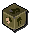
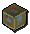
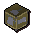
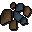

")
Die Markthalle
Einführung | Grundlagen | Gegenstände verkaufen | Gegenstände kaufen | Sätze von Gegenständen | Historie | Fragen und Antworten
Einführung
Die große Markthalle ist Mitgliedern sowie Spielern der kostenlosen Version zugänglich und kann von jeder Welt aus erreicht werden. Bitte bedenkt, dass alle Geschäfte, die ihr in der Markthalle vollzieht, endgültig sind. Ihr könnt einen Handel nicht rückgängig machen.
Hier klicken, um die Datenbank zur großen Markthalle zu besuchen.


Ihr findet die große Markthalle im Nordwesten von Varrock. Die Stadt selbst ist kaum zu übersehen, denn sie ist eine der ersten Städte, die neue Spieler besuchen.
Erste Schritte
 Bevor ihr die große Markthalle benutzen könnt, müsst ihr euch von dem Markthallen-Ratgeber oder von Brugsen Bursen eine Einführung geben lassen. Beide findet ihr südlich, im Außenbereich der Markthalle.
Bevor ihr die große Markthalle benutzen könnt, müsst ihr euch von dem Markthallen-Ratgeber oder von Brugsen Bursen eine Einführung geben lassen. Beide findet ihr südlich, im Außenbereich der Markthalle. Brugsen Bursen (rechts abgebildet), der Gründer der großen Markthalle, gibt euch gerne eine fundierte und sehr interessante Einleitung. Er weiß auch über die Geschichte der großen Markthalle Bescheid.
Der Markthallen-Ratgeber fasst sich kürzer.
Am Rande der großen Markthalle stehen einige andere Handelsberater, von denen jeder ein bestimmtes Spezialgebiet hat. Ihr könnt mit ihnen oder Brugsen Bursen reden, um die aktuellen Preise bestimmter Gegenstände zu erfahren. Da sich die Preise von Zeit zu Zeit ändern, solltet ihr euch regelmäßig bei ihnen über die Marktlage informieren. Die Handelsberater sind auf der Minikarte folgendermaßen gekennzeichnet:
| Hofuthand - Waffen und Rüstzeug Hofuthand der Zwerg ist ein Experte auf dem Gebiet der Waffen und Rüstungen. Er kann euch den Preis von einzelnen Gegenständen oder kompletten Sätzen nennen. |
|
| Bob Barter - Kräuter Bob ist den weiten Weg aus Ardougne angereist, um Kräuter zu kaufen und zu verkaufen. Er kann euch die Preise vieler gesäuberter und handelbarer Kräuter sagen. |
|
| Relobo Blinyo - Scheite Relobo stammt aus dem Dorf von Shilo, wo man sehr viel über Bäume weiß. Daher ist er immer über die Preise der gängigsten Scheite informiert und teilt sein Wissen gerne mit euch. |
|
| Farid Morrisane - Erze Farid ist der Sohn des berühmt-berüchtigten Ali Morrisane aus Al-Kharid. Sein Spezialgebiet sind Erze. Einen besser informierten Mann oder Jungen findet ihr nirgendwo. |
|
| Mattes Trübauge - Runen Sogar Piraten interessieren sich für Handel, zumindest, wenn sie - wie Mattes Trübauge - von den Magiern der Mondinsel einen ordentlichen Stapel Runen bekommen haben. Er hält euch gerne über den Runen- und Runenessenz-Markt auf dem Laufenden. |
Grundlagen
Im Grunde genommen ist die große Markthalle sehr leicht zu durchschauen. Der Vorgang lässt sich in fünf einfachen Schritten erklären.
- Bringt Gegenstände zum Verkaufen oder Gold zum Bezahlen mit.
- Sprecht mit einem der Kaufleute in der Markthalle, um Gegenstände zu kaufen oder zu verkaufen.
- Die Kaufleute nehmen eure Gegenstände oder euer Geld entgegen und sehen sich nach passenden Angeboten/Anfragen um.
- Ihr müsst eventuell kurz warten bis ein Anbieter oder ein Käufer gefunden wurde. Manchmal geht es aber auch ganz schnell!
- Ihr erhaltet eine Nachricht, wenn der Handel vollzogen ist, und könnt dann zur großen Markthalle oder einer beliebigen Bankfiliale gehen, um eure Waren oder euer Geld abzuholen.
Da die große Markthalle rund um die Uhr geöffnet hat, werden die Kaufleute sich ständig darum bemühen, einen Handelspartner für euch zu finden. Ihr müsst nicht einmal eingeloggt oder auf der gleichen Welt sein wie der Spieler, mit dem ihr den Handel vollzieht. Ihr müsst auch nicht in der Markthalle oder in der Bank rumstehen. Ihr könnt Fertigkeiten trainieren, ein Abenteuer durchspielen oder andere Dinge tun, die euch Spaß machen, und darauf warten, dass ihr von den Kaufleuten in der großen Markthalle eine Nachricht erhaltet.
Ihr könnt in der Markthalle natürlich keine Waren verkaufen oder kaufen, die nicht handelbar sind. Außerdem gibt es auch noch einige wenige handelbare Güter, die ihr hier nicht anbieten dürft.
Bei allen Händeln, die in der großen Markthalle abgewickelt werden, werden die Waren von Spieler zu Spieler getauscht. Das System führt also weder neue Gegenstände ins Spiel ein, noch zerstört es welche - die Gegenstände wechseln einfach den Besitzer. Euer Angebot kann also nur Erfolg haben, wenn die Kaufleute einen Handelspartner finden, der euer Angebot annimmt. Ihr erfahrt nicht, von wem die Waren stammen oder wer eure Waren gekauft hat, aber ihr bekommt trotzdem den bestmöglichen Handelspartner.
Die Wirkungsweise der großen Markthalle wird in den folgenden Abschnitten näher erklärt:
Verkaufen

Hier könnt ihr sehen, welche Angebote ihr derzeit in der Markthalle eingestellt habt. Mitglieder können bis zu sechs Kauf- oder Verkaufsangebote gleichzeitig laufen haben. Spieler der kostenlosen Version können zwei gleichzeitig einstellen. In diesem Beispiel hat der Spieler gerade keine Angeboten laufen.
 Klickt dann auf das Symbol für Verkaufen (mit dem Pfeil nach oben), um eine Ware zum Verkauf anzubieten. Ihr müsst den Gegenstand oder den Stapel an Gegenständen in eurem Inventar haben. Für große Mengen könnt ihr die Waren als Zertifikate mitbringen. Jeder Warentyp beansprucht eines eurer Angebots-Felder.
Klickt dann auf das Symbol für Verkaufen (mit dem Pfeil nach oben), um eine Ware zum Verkauf anzubieten. Ihr müsst den Gegenstand oder den Stapel an Gegenständen in eurem Inventar haben. Für große Mengen könnt ihr die Waren als Zertifikate mitbringen. Jeder Warentyp beansprucht eines eurer Angebots-Felder. 
Ihr könnt die gewünschte Verkaufsmenge dann reduzieren oder erhöhen, indem ihr die Schaltflächen unter dem Feld 'Anzahl' benutzt oder auf + und - klickt. Die Schaltfläche '...' lässt euch die gewünschte Anzahl manuell eintippen. Ein Klick auf eine der Schaltflächen ändert die Anzahl zu dieser Menge. Wenn ihr also 100 Einheiten verkaufen möchtet, müsst ihr einfach auf die Schaltfläche '100' klicken. Wenn ihr die Menge der zu verkaufenden Gegenstände verändert, euch dann aber entscheidet, doch alle zu verkaufen, könnt ihr dies wieder ändern, indem ihr auf die Schaltfläche 'ALLE' klickt.
Ihr seht, dass der Preis der Gegenstände automatisch dem aktuellen Marktwert angepasst wird. Dieser Wert kann sich ändern, wenn die Ware häufig für mehr oder weniger verkauft wird (siehe unten). Ihr könnt den Preis erhöhen oder reduzieren, indem ihr auf das + oder - neben dem Preis klickt. Über die Pfeil-Schaltflächen könnt ihr den Minimalpreis oder Maximalpreis einstellen (normalerweise jeweils 5% unter oder über dem Marktwert). Wenn ihr auf '...' klickt, könnt ihr den Preis manuell eingeben.
 |
 |
 |
 |
 |
 |
| Menge/Preis um eins reduzieren | Menge/Preis um eins erhöhen | Minimalpreis einstellen | Marktpreis einstellen | Maximalpreis einstellen | Preis manuell eintippen |
Wenn ihr mit euren Einstellungen zufrieden seid, betätigt die Schaltfläche 'Angebot akzeptieren' und wartet auf das Ergebnis. Wollt ihr den Verkauf abbrechen, klickt auf den Pfeil unten links, um zurück zur Übersicht über eure Angebote zu kommen.
Wenn ihr einen Stapel Gegenstände anbietet, kann es sein, dass sie in Blöcken verkauft werden. Im obigen Beispiel ist es möglich, dass die Kaufleute 200 Diamanten an einen Spieler verkaufen, 50 an einen anderen und so weiter. Daher kann es eine Weile dauern, bis größere Mengen verkauft sind. Das Gute ist jedoch, dass ihr so immer den Preis dafür bekommt, den ihr haben wolltet. Falls ihr den Preis zu hoch angesetzt habt, kann es allerdings sein, dass eure Waren sich gar nicht verkaufen.
Haben die Kaufleute in der großen Markthalle ein Geschäft für euch abgewickelt, erhaltet ihr eine Nachricht. Ihr könnt dann zur großen Markthalle oder einer beliebigen Bankfiliale gehen und einen Bankangestellten rechtsklicken und 'Abholen' auswählen, um eure Warenausgabe anzusehen). So könnt ihr euer Gold abholen oder, anhand des Balkens unter eurem Angebot, den Status eurer Geschäfte nachvollziehen. Klickt hier, um mehr über Banken und die Warenausgabe zu erfahren.
Ihr könnt dann zur großen Markthalle oder einer beliebigen Bankfiliale gehen, um euer Gold abzuholen.
Ihr könnt euch über den Status eurer Verkäufe informieren, indem ihr mit den Kaufleuten in der Markthalle redet oder sie rechtsklickt und 'Geschäfte abwickeln' auswählt. Dadurch ruft ihr die Übersicht über eure Angebote auf und könnt ein Angebot anklicken, um dessen Fortschritt zu überprüfen.
Klickt auf die Münzen in der rechten unteren Ecke der Zusammenfassung, um sie abzuholen.
Ihr könnt ein Angebot jederzeit abbrechen, wenn ihr mit den Kaufleuten in der Markthalle sprecht oder sie rechtsklickt und 'Geschäfte abwickeln' auswählt. Klickt auf das Angebot, das ihr zurückziehen wollt, und betätigt den roten Knopf in der unteren rechten Ecke des Fensters. Wenn ihr schon einige der Gegenstände verkauft habt, könnt ihr dann auch euer Geld abholen.
In manchen Fällen kann euer Angebot nicht vollständig abgeschlossen werden. Wenn ihr wissen wollt, woran das liegen könnte klickt hier.
Kaufen
Waren einzukaufen geht schnell und einfach. Um ein Kaufangebot zu schalten, müsst ihr mit den Kaufleuten sprechen oder sie rechtsklicken und 'Geschäfte abwickeln' auswählen.


Ihr seht dann das Fenster rechts.
In diesem Fenster seht ihr ein blinkendes Quadrat mit einer Lupe. Dort wird der Gegenstand angezeigt, den ihr kaufen möchtet, sobald ihr ihn ausgewählt habt. In eurem Chatfenster wird auch ein Feld geöffnet, in das ihr den Namen des gewünschten Gegenstands eintippen könnt, um dafür ein Kaufangebot zu machen.
Wenn ihr nach Gegenständen suchen wollt, fangt an, den Namen einzugeben. Während ihr tippt, erscheint eine Liste von Waren, die ihr auswählen könnt:

|
|
|
|
|
|
| Menge/Preis um eins reduzieren | Menge/Preis um eins erhöhen | Minimalpreis einstellen | Marktpreis einstellen | Maximalpreis einstellen | Preis manuell eintippen |
Die Kaufleute in der Markthalle werden sich immer bemühen, ein billiges Verkaufsangebot für euch zu finden. Eventuell müsst ihr sogar weniger für den Kauf bezahlen, als ihr geboten habt. Es kann auch sein, dass ihr von verschiedenen Spielern zu unterschiedlichen Preisen einkauft. Es wird euch aber nie mehr kosten, als den Preis, den ihr in eurem Angebot für den Gegenstand ausgewählt habt.

Haben die Kaufleute in der großen Markthalle ein Kauf für euch abgewickelt, erhaltet ihr eine Nachricht - genauso wie beim Verkauf von Gegenständen. Ihr könnt dann zur großen Markthalle oder einer beliebigen Bankfiliale gehen und einen Bankangestellten rechtsklicken und 'Abholen' auswählen, um eure Warenausgabe anzusehen). So könnt ihr euren neuen Besitz abholen oder, anhand des Balkens unter eurem Angebot, den Status eurer Geschäfte nachvollziehen. Klickt hier, um mehr über Banken und die Warenausgabe zu erfahren.
Ihr könnt ein Angebot jederzeit abbrechen, wenn ihr mit den Kaufleuten in der Markthalle sprecht oder sie rechtsklickt und 'Geschäfte abwickeln' auswählt. Klickt auf das Angebot, das ihr zurückziehen wollt, und betätigt den roten Knopf in der unteren rechten Ecke des Fensters. Wenn ihr schon einige Waren gekauft habt, könnt ihr sie euch dann abholen.
In manchen Fällen kann euer Angebot nicht vollständig abgeschlossen werden. Wenn ihr wissen wollt, woran das liegen könnte klickt hier.
Sätze
 Einige Gegenstände, vor allem Rüstzeug, können in einen einzigen Gegenstands-Satz umgewandelt werden, um den Einkauf leichter zu machen oder damit man nicht warten muss, bis jemand die einzelnen Bestandteile einkauft. Für diese Umwandlung müsst ihr nichts bezahlen. Das hat auch den Vorteil, dass ihr so nur ein einziges Angebots-Feld belegt. Um Rüstzeug in einen Satz zu verwandeln, müsst ihr mit den Kaufleuten in der Markthalle sprechen.
Einige Gegenstände, vor allem Rüstzeug, können in einen einzigen Gegenstands-Satz umgewandelt werden, um den Einkauf leichter zu machen oder damit man nicht warten muss, bis jemand die einzelnen Bestandteile einkauft. Für diese Umwandlung müsst ihr nichts bezahlen. Das hat auch den Vorteil, dass ihr so nur ein einziges Angebots-Feld belegt. Um Rüstzeug in einen Satz zu verwandeln, müsst ihr mit den Kaufleuten in der Markthalle sprechen. Auf die gleiche Weise könnt ihr einen Satz auch wieder in seine Einzelteile zerlegen, um diese benutzen zu können.
Vorsicht! Wenn ihr auf 'Zerstören' klickt, zerlegt das euren Satz nicht wieder in seine Einzelteile! Ihr müsst mit den Kaufleuten reden, die den Satz gegen die benutzbare Rüstung austauschen werden.
Nicht jedes Stück Rüstzeug kann in einen Satz verwandelt werden. Ihr müsst alle Bestandteile des Satzes in eurem Inventar tragen, also seht euch diese Liste an, bevor ihr versucht, eure Rüstung in einen Satz zu verwandeln:
 |
Sätze mit normalem Metall-Rüstzeug (Bronze, Eisen, Stahl, Schwarz, Mithril, Adamant, Runit): Plattenpanzer, Vollhelm, Pentaschild, Plattenbeinlinge/-rock (die Sätze sind mit (B) oder (R) gekennzeichnet - je nachdem, ob sie Beinlinge oder einen Rock beinhalten) |
 |
Sätze mit Drachen-Rüstzeug: Kettenhemd, Halbhelm, Plattenbeinlinge/-rock (die Sätze sind mit (B) oder (R) gekennzeichnet - je nachdem, ob sie Beinlinge oder einen Rock beinhalten) |
|  | Sätze mit Rüstzeug aus den Grabhügeln* (Ahrim, Dharok, Guthan, Karil, Torag, Verac): Körperschutz, Beinlinge, Kopfschutz, Waffe |
 |
Sätze mit Rüstzeug aus dem Dritten Zeitalter: Plattenpanzer, Vollhelm, Pentaschild, Plattenbeinlinge |
 |
Verzierte und goldverzierte Sätze (Schwarz, Adamant, Runit): Plattenpanzer, Vollhelm, Pentaschild, Plattenbeinlinge/-rock (die Sätze sind mit (B) oder (R) gekennzeichnet - je nachdem, ob sie Beinlinge oder einen Rock beinhalten) |
 |
Sätze mit vergoldetem Rüstzeug: Plattenpanzer, Vollhelm, Pentaschild, Plattenbeinlinge/-rock (die Sätze sind mit (B) oder (R) gekennzeichnet - je nachdem, ob sie Beinlinge oder einen Rock beinhalten) |
|  | Sätze mit Götter-Rüstzeug (Guthix, Saradomin, Zamorak): Plattenpanzer, Vollhelm, Pentaschild, Plattenbeinlinge/-rock (die Sätze sind mit (B) oder (R) gekennzeichnet - je nachdem, ob sie Beinlinge oder einen Rock beinhalten) |
 |
Sätze mit Dagannoth-Rüstzeug (Felskrabben, Dagannoth, Wallasalki): Kopfschutz, Körperschutz, Beinschutz |
 |
Sätze mit Drachenhaut-Rüstzeug (Grün, Blau, Rot, Schwarz): Harnisch, Beinlinge, Armlinge |
 |
Sätze mit gesegnetem Drachenhaut-Rüstzeug (Guthix, Saradomin, Zamorak): Harnisch, Nackenschutz, Beinlinge, Armlinge |
 |
Sätze mit Fernkampf-Rüstzeug des 3. Zeitalters: Nackenschutz, Harnisch, Beinlinge, Armlinge |
 |
Sätze mit verziertem und goldverziertem Drachenhaut-Rüstzeug (Grün, Blau): Harnisch, Beinlinge |
 |
Sätze Mystik-Roben (normal, dunkel, hell): Hut, Robenoberteil, -unterteil, Handschuhe, Stiefel |
 |
Sätze mit Phantom-Rüstzeug: Hut, Robenoberteil, -unterteil, Handschuhe, Stiefel |
 |
Sätze mit Spaltrinden-Rüstzeug: Helm, Harnisch, Stiefel, Beinlinge |
 |
Sätze mit Magierroben aus dem Dritten Zeitalter: Robenoberteil, -unterteil, Amulett, Hut |
 |
Sätze mit verzauberten Magierroben: Hut, Robenoberteil, -unterteil |
 |
Sätze mit verzierten und goldverzierten Magierroben: Hut, Robenoberteil, -unterteil |
|  | Zwergenkanonen-Satz: Kanonensockel, Kanonenstand, Kanonenrohr, Kanonenbrennkammer. |
* Sätze mit Grabhügel-Rüstzeug dürfen nur unbeschädigte Einzelteile enthalten.
Historie

Hier werden eure letzten fünf Geschäfte angezeigt: die Art des Angebots (Kauf oder Verkauf), die Menge und der Preis (was ihr bezahlt oder eingenommen habt). Ein Geschäft taucht nur auf, wenn ihr eure Gegenstände und/oder euer Gold abgeholt habt - das betrifft auch Händel, die abgebrochen wurden.
Ein Spieler, der sich gut mit den aktuellen Preisen auskennt und seine Historie analysiert, wird in der Markthalle die größten Gewinne machen.
Häufige Fragen
Was beeinflusst den Preis eines Gegenstands?
Bei euren Einkäufen und Verkäufen stellt ihr vermutlich fest, dass sich der Wert von Gegenständen öfter mal ändert. Das hängt davon ab, wie viel die Waren den Spielern wert sind. Wenn ein Gegenstand schwer zu bekommen ist oder sehr nützlich, wird der Preis steigen, da die Käufer mehr als den derzeitigen Marktwert dafür bieten, um sicherzugehen, dass sie den Gegenstand bekommen, und die Verkäufer daher ebenfalls ihre Preise anheben.
Umgekehrt gilt das auch für gewöhnliche, weniger nützliche Gegenstände, die im Wert verlieren können.
Das ist das Gesetz von Angebot und Nachfrage.
- Wenn die Nachfrage für einen Gegenstand hoch ist, das Angebot jedoch niedrig, erhöht sich der Preis.
- Wenn die Nachfrage für einen Gegenstand niedrig ist, das Angebot jedoch hoch, sinkt der Preis.
- Wenn die Nachfrage und das Angebot gleich sind, bleibt der Preis relativ konstant.
Weil man normalerweise nur 5% mehr oder weniger als den Marktwert bieten kann, ist die Gefahr, dass ein Preis rapide ansteigt oder sinkt sehr gering. Das macht es schwerer für Spieler, die Preise zu manipulieren, und so macht jeder ein faires Geschäft.
Preise werden voll und ganz durch den Handel der Spieler bestimmt. Es gibt keinen festen Wert, auf dem die Preise basieren. Die Preise werden allerdings nie höher sein als der Verkaufspreis im Grundbestand der Läden oder niedriger als der Ankaufspreis in den Geschäften. Die Läden richten ihre Preise wiederum an der großen Markthalle aus, also ist es sehr schwierig, schnelles Geld dadurch zu machen, dass man Waren in den Läden einkauft und in der Markthalle wieder verkauft oder umgekehrt.
Die Preise für die Gegenstände werden demnach nicht von Jagex, sondern von den Spielern selbst festgesetzt. Wir wollen eine von den Spielern gesteuerte Wirtschaft beibehalten, daher werden die Preise nach dem Prinzip von Angebot und Nachfrage ausgerechnet. Wir schreiten nur ein, wenn es unbedingt notwendig ist - bei Preis-Manipulationen. Das System hat jedoch viele Sicherheitsnetze, die so etwas verhindern sollen.
Der Marktwert eines Gegenstands wird ungefähr einmal pro Tag automatisch neu berechnet.
Gibt es Einschränkungen, wie viel ich für eine Ware bieten oder berechnen darf?
Wenn ihr einen Gegenstand zum Verkauf anbietet oder ein Kaufangebot schaltet, zeigt euch das Fenster eine bestimmte Preisspanne an. Zum Beispiel könnte man beim Verkauf/Einkauf von geschliffenen Diamanten Folgendes angezeigt bekommen:
 Der Marktwert wird unten angezeigt, die zwei Preise darüber stellen den Minimal- und Maximalpreis dar, für den die Ware gehandelt werden kann. Diese Werte werden prozentual berechnet. Wie schon erwähnt, passt sich der Preis für eine Ware an, wenn diese ständig über oder unter dem Marktwert verkauft wird.
Der Marktwert wird unten angezeigt, die zwei Preise darüber stellen den Minimal- und Maximalpreis dar, für den die Ware gehandelt werden kann. Diese Werte werden prozentual berechnet. Wie schon erwähnt, passt sich der Preis für eine Ware an, wenn diese ständig über oder unter dem Marktwert verkauft wird. Das bedeutet, dass der Marktpreis immer der Durchschnittswert ist, zu dem eine Ware gehandelt wird.
Außer dieser Preisspanne gibt es keine Einschränkungen beim Festlegen der Preise. Wenn ihr einige Gegenstände habt, bei deren Verkauf ihr einen Gewinn machen wollt, könnt ihr dafür den Maximalpreis verlangen (oder im umgekehrten Fall den Minimalpreis). Das ist kein Gegenstandsbetrug, da Spieler häufig Waren zum Minimalpreis verkaufen oder kaufen, weil sie ein schnelles Geschäft machen wollen.
Warum ist mein Angebot noch nicht vollständig abgeschlossen?
Dafür gibt es verschiedene Gründe:
- Ihr habt den Preis zu hoch angesetzt (beim Verkaufen) oder bietet zu wenig (beim Kaufen).
- Euer Angebot ist schon so lange im System, dass sich die Preise geändert haben und euer Gegenstand nicht mehr zu dem Preis gehandelt werden kann, den ihr angegeben habt. Um zu verhindern, dass solche Angebote die Balance des Markts stören, werden sie nicht abgeschlossen.
- Keiner hat Interesse daran, diese Gegenstände zu verkaufen oder zu kaufen.
- Wenn ihr eben erst einen Gegenstand ein- oder verkauft habt, könnt ihr diesen Gegenstand eine Zeitlang nicht ein- oder verkaufen. Falls wir das erlauben würden, wäre es viel zu einfach, die Preise zu manipulieren und die Stabilität der Wirtschaft zu gefährden.
Hat der Marktpreis auch Auswirkungen auf den Alchemie-Wert eines Gegenstands?
Nein. Der Alchemie-Wert eines Gegenstands ist separat und statisch und wird von dem Handel in der Markthalle nicht beeinflusst. Die Gegenstände, die ihr nach eurem Tod behaltet, werden anhand ihres Alchemie-Werts bestimmt und nicht anhand des Marktpreises.
 |
 |
 |
 |
 |  |
Und damit entlassen wir euch aus der trockenen Theorie in die Praxis. Viel Spaß in der Markthalle!

Weitere Artikel in Steuerung
|
|
|
Weiterführende Informationen Wenn euch dieser Artikel nicht weitergeholfen hat, könnt ihr in den folgenden Kapiteln der RuneScape-Webseite mehr Informationen finden:
|
|